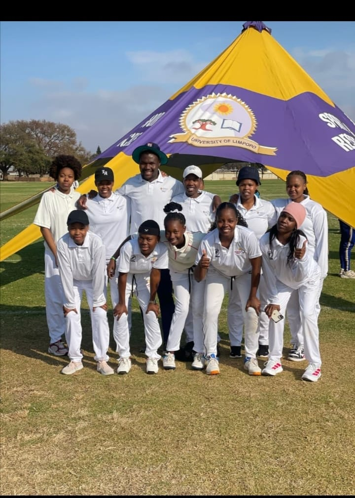
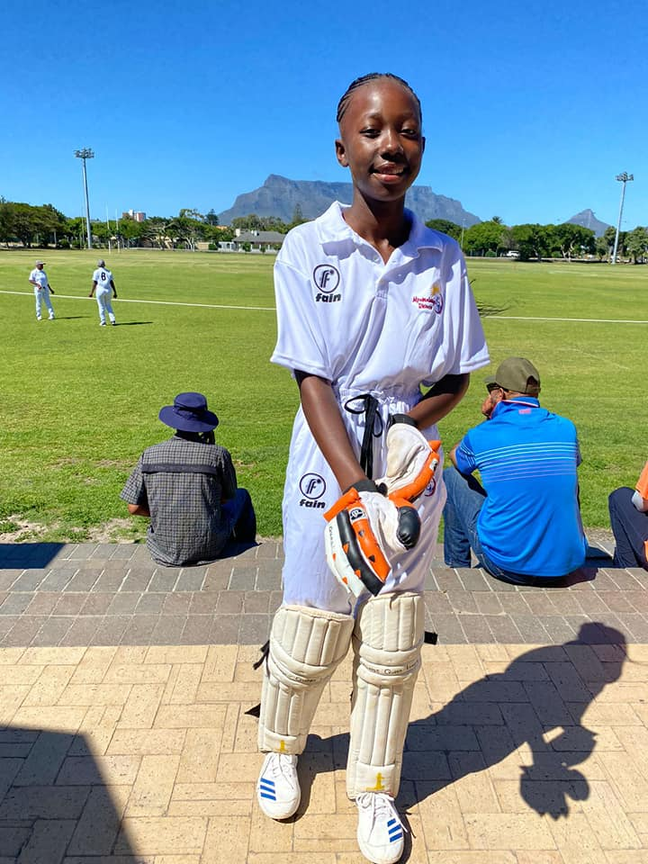

<!-- SAME HEADER + FOOTER -->
<main>
  <section class="news-section">
    <h2>Latest News</h2>
      <article class="news-item">
        
        <h3>🏏 Bushbuckridge U/13 Win by 7 Wickets</h3>
        <p><strong>Date:</strong> 14 August 2025</p>
        <p><strong>Match Summary:</strong>  
          White River batted first and scored 134 runs for 9 wickets in 23 overs.  
          Bushbuckridge U/13 replied strongly, reaching 135/3 in just 14.1 overs, securing a convincing 7-wicket victory.
        </p>
        <p><strong>Division:</strong> A | <strong>Age Group:</strong> Under 12 A</p>
        <p><strong>Coaches:</strong> Ndlovu P.R (White River), J. Fouche (Bushbuckridge)</p>
        <a href="#" onclick="showSection('results')">View Full Scorecard</a>
      </article>
      <article class="news-item">
        
        <h3>🏏 League's Update</h3>
        <p><strong>Date:</strong> 29 July 2025</p>
        <p>Girls Under 19 will start their league on the 13th August. The following weekend will be our U15 and U19 boys.</p>
        <a href="https://www.facebook.com/profile.php?id=100070892319155" target="_blank">Read more on Facebook</a>
      </article>
      <article class="news-item">
        
        <h3>🏏 Game Announced</h3>
        <p><strong>Date:</strong> 28 July 2025</p>
        <p>Our Under 13 boys will travel to Barberton Laer skool on Thursday 31st for a league game.</p>
        <a href="https://www.facebook.com/profile.php?id=100070892319155" target="_blank">Read more on Facebook</a>
      </article>
      <article class="news-item"> 
         
        <h3>Tour To University of Limpopo</h3> 
        <p><strong>Date:</strong> 27 July 2025</p> 
        <p>Our Cricket Boys and Girls from University of Mpumalanga toured to University of Limpopo Sunday 27 July 2025.</p>
        <a href="https://www.facebook.com/profile.php?id=100070892319155" target="_blank">View on Facebook</a> 
      </article>
      <article class="news-item">
        
        <h3>🇬🇧 Exhibition Game Hosted British Delegates</h3>
        <p><strong>Date:</strong> 27 January 2024</p>
        <p>Bushbuckridge Cricket Club hosted a special exhibition match at Acornhoek with UK delegates.</p> 
        <a href="https://www.facebook.com/profile.php?id=100070892319155" target="_blank">View on Facebook</a>
      </article>
      <article class="news-item"> 
         
        <h3>🏏 Display Game Announced</h3>
        <p><strong>Date:</strong> Jan 2024</p> 
        <p>A display match with UK delegates at Acornhoek. Players prepared well for the game.</p>
        <a href="https://www.facebook.com/profile.php?id=100070892319155" target="_blank">Read more on Facebook</a>
      </article>
      <article class="news-item"> 
         
        <h3>🏏 Queen Hlatshwayo Represents Mpumalanga Rhinos</h3> 
        <p><strong>Date:</strong> Dec 2023</p>
        <p>Our own Queen Hlatshwayo played at the national week in Cape Town.</p>
        <a href="https://www.facebook.com/100070892319155/posts/pfbid02QUoDAwGc6Db3KEkkfpMXrBnDYQ4ByfwGSSBUCXkzsrzhBNqftb8MNAtbCZ57YJc6l" target="_blank">View on Facebook</a>
      </article> 
  </section>
</main>
